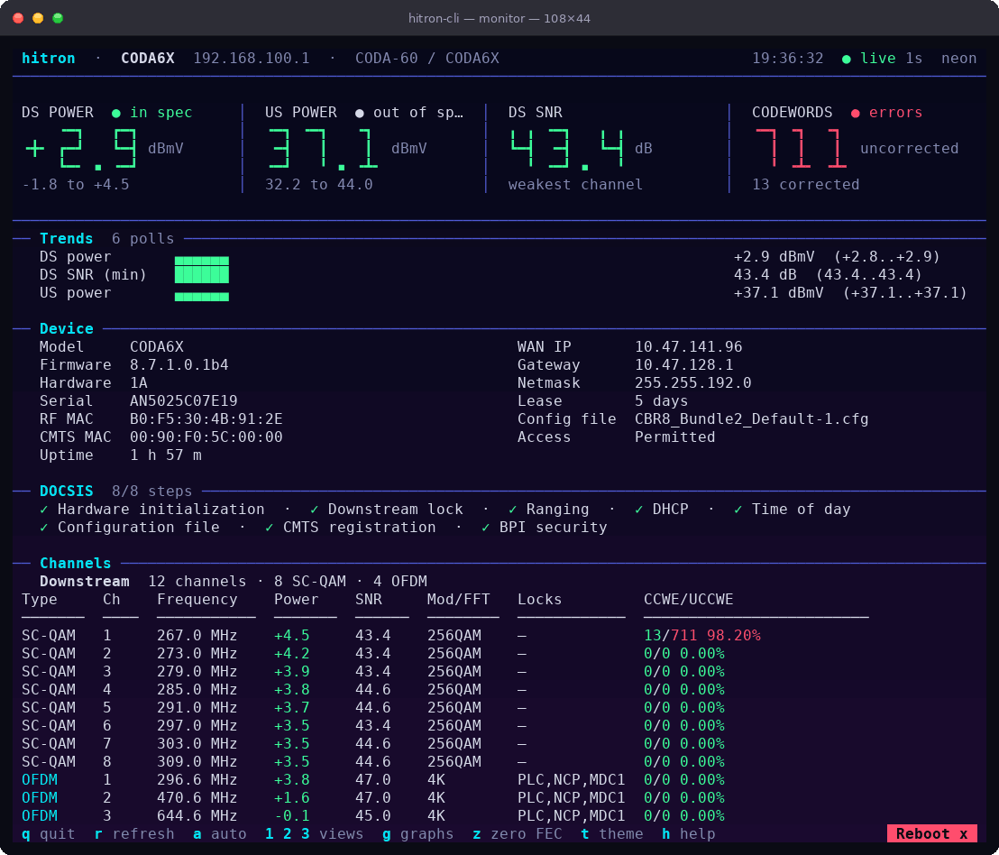

hitron-cli (Go)

Captured against a replay of a real CODA-60 with the serial, MACs and IPs replaced. demo/ has the replay server and renderer.
A standalone terminal client for the three Hitron families this repository documents. It is a single static binary with no runtime, no config file, and no dependencies outside the Go standard library.
| Device | API | Detection probe |
|---|---|---|
| CODA6X (CODA-60) | /1/Device/... JSON |
GET /1/Device/CM/Version |
| CODA-57 | /data/*.asp JSON |
GET /data/getSysInfo.asp |
| HT-EM5 | /ms/<type>/<reg> MoCA RPC |
GET /index.html + POST /ms/1/0x302/GET |
The Python package in src/hitron/ remains the exporter and library. This
binary exists for the case where you want to walk up to a modem and read it
from a laptop with nothing installed.
Build#
cd cli
go build -o hitron-cli ./cmd/hitron-cli
./hitron-cli version
Go 1.22 or newer. Cross-compiling is the usual GOOS/GOARCH pair:
GOOS=linux GOARCH=amd64 CGO_ENABLED=0 go build -o hitron-cli-linux ./cmd/hitron-cli
Tagged releases (cli/v*) build Linux, macOS, and Windows binaries for amd64
and arm64 in .github/workflows/cli-release.yml; each file ships with a
.sha256.
Install from a release#
Download the file for your platform, then:
chmod +x hitron-cli_darwin_arm64
sudo mv hitron-cli_darwin_arm64 /usr/local/bin/hitron-cli
hitron-cli help
Commands#
hitron-cli stats one-shot report, or live TUI in a terminal (default)
hitron-cli monitor force the live TUI
hitron-cli detect identify CODA6X / CODA-57 / HT-EM5
hitron-cli system identity, provisioning, Ethernet ports
hitron-cli channels downstream and upstream RF detail
hitron-cli logs DOCSIS event log
hitron-cli moca HT-EM5 link, bands, nodes
hitron-cli reboot reboot (prompts, or --confirm)
hitron-cli factory-reset factory reset + reboot (CODA6X)
hitron-cli hard-reset immediate restoreReset + reboot (CODA6X)
hitron-cli fec-reset clear the downstream FEC counters (CODA6X)
hitron-cli pwod password of the day (CODA6X, offline)
hitron-cli help [topic] overview or one topic
hitron-cli version version
If the command is omitted, stats runs. Running stats in a real terminal
opens the live view; piping it or using --once/--json prints one report and
exits, which is what the TUI-less cases need.
Flags#
| Flag | Meaning |
|---|---|
-H, --host HOST |
gateway address, default 192.168.100.1 |
-u, --user NAME |
username for authenticated reads and writes |
-p, --password PASS |
password |
--token TOKEN |
CODA6X Ht-App-Auth app token |
--timeout 10s |
per-request timeout |
--interval 5s |
live refresh interval |
--limit 20 |
log lines in the one-shot report |
--once |
one report, never the TUI |
--json |
machine-readable snapshot |
--no-color |
disable ANSI color |
--confirm |
skip the y/N prompt on a destructive command |
--no-banner |
suppress the startup art |
-h, --help |
help |
-V, --version |
version |
The host can also be a positional argument, a hostname, or a URL with a port:
hitron-cli 192.168.100.1, hitron-cli 127.0.0.1:8080,
hitron-cli http://192.168.100.1.
Environment#
| Variable | Meaning |
|---|---|
HITRON_HOST / HITRON_DEVICE |
default host |
HITRON_USERNAME |
username |
HITRON_PASSWORD |
password |
HITRON_APP_TOKEN |
CODA6X app token |
HITRON_TIMEOUT |
timeout in seconds |
HITRON_INTERVAL |
refresh interval (5s, 500ms, or seconds) |
NO_COLOR |
disable ANSI color |
Flags override the environment.
Authentication#
Reads answer anonymously on the analyzed CODA6X firmware and (per the captured
unit) the CODA-57 .asp API. The CLI still handles the gates honestly:
- CODA6X: writes
POST /1/Device/Users/Loginwith the firmware'smodel={"username":...,"password":...}form, then reuses the session cookie.--tokensendsHt-App-Authinstead. - CODA-57:
GET /login.htmlprimes aPHPSESSID. No credential POST has been confirmed against real hardware, so the CLI does not invent one; a gated device is reported, not guessed at. - HT-EM5: HTTP Basic on every request. The factory image defaults to
admin/admin, which the detector uses only when no credentials were supplied. It fetches/index.htmlfor thecsrf_tokencookie and echoes it asX-CSRF-TOKEN.
When a device asks for a login and stdin is a terminal, the CLI prompts once
and retries. With --json or no terminal it exits with a clear error instead
of hanging.
Writes#
Three destructive verbs, each requiring credentials:
| Command | CODA6X body | HT-EM5 | CODA-57 |
|---|---|---|---|
reboot |
{"reboot":1,"factoryReset":0,"restoreReset":0} to CM/Reboot |
POST /ms/1/0xb00/PUT {"data":[1]} |
unsupported |
factory-reset |
{"reboot":0,"factoryReset":1,"restoreReset":0} |
unsupported | unsupported |
hard-reset |
{"reboot":0,"factoryReset":0,"restoreReset":1} |
unsupported | unsupported |
One non-destructive write needs no session, no prompt, and no credentials:
| Command | CODA6X | HT-EM5 | CODA-57 |
|---|---|---|---|
fec-reset |
bare PUT CM/DsInfo, repeated bare PUT CM/DsOfdm |
unsupported | unsupported |
fec-reset only zeroes counters, so it acts immediately; --json makes it
scriptable. It is the command-line form of the TUI's z key.
The handler reads all three reboot flags before choosing a branch, so the body is
always the full triple; a partial body is a PHP 8 fatal (HTTP 500), not
errCode 001. Only hard-reset has been measured working: the connection drops
with no reply, the unit is unreachable ~5 s later and back ~122 s after that.
Every one of the three verbs asks:
Reboot CODA-60 / CODA6X at 192.168.100.1? This acts on the real device. [y/N]
Only --confirm (or -y) skips that question. It never removes the
credential requirement, and the CLI calls Login immediately before acting so
the write is one traceable operation. Answering no exits 1.
CODA-57 has no confirmed write path in this repository. The CLI says so and stops; it does not try a plausible-looking URL on a live modem.
Password of the day#
The CODA6X runs htx_pod_main, which rewrites the mso ("Default Admin")
password shortly after local midnight from a seed the ISP provisions in DOCSIS
TLV43 sub-option 242. hitron-cli pwod computes that value on this host:
hitron-cli pwod # today, empty seed
hitron-cli pwod --seed 12345678 # today, with the seed
hitron-cli pwod --seed 12345678 --date 2026-11-26 --days 7
hitron-cli pwod --encrypted-seed 'i19WhrZqaiiNNVC+oWsv3Q==' --json
The algorithm is SHA1("Pa55w0RolHiTr0N" + YYYY + MM + DD + seed), with the
first 16 bytes mapped to [0-9A-Za-z]. The device stores the seed as
base64(AES-128-ECB(seed)) under the fixed key from libpodalgorithm
(uci general.podCfg.defseed); --encrypted-seed takes that form, and
--encrypt-seed / --decrypt-seed convert between the two. The firmware's NUL
truncation and strlen-based unpad are reproduced, so a seed that is already
block aligned can decode short; pass --seed when the plaintext is known.
Nothing here contacts the modem, needs credentials, or writes anything. The
date is the modem's local date, so use --utc or --date when its clock or
timezone differs from this host. A unit with no provisioned seed has no daily
password; the empty-seed value is only a baseline, not what a provisioned modem
uses.
Live view#
monitor, or stats in a terminal, draws a full-screen report and refreshes
on --interval (default 5s; 1s on the CODA-57 and CODA-60).
The summary opens with four big-number cards (downstream power, upstream
power, weakest downstream SNR, uncorrectable codewords), then trend graphs, a
device block (serial, RF MAC, CMTS MAC, firmware, config file), the DOCSIS
provisioning steps, typed channel tables with a CCWE/UCCWE codeword column
and a decoded, shortened event log. The mouse wheel scrolls.
| Key | Action |
|---|---|
q |
quit |
r, space |
refresh now |
a |
toggle automatic refresh |
g |
toggle trend graphs |
z |
reset the downstream FEC counters (3.0 + OFDM). Writes on the CODA6X; on other families it only zeroes the displayed counts. |
t |
next color theme, remembered for next time |
b |
toggle the gradient background (24-bit color terminals only) |
x, the Reboot button |
reboot, after a confirmation (see below) |
j, k, arrows |
scroll |
h, ? |
help overlay |
1 |
summary |
2, s |
live spectrum |
3, c |
constellation (I/Q) |
[, ] |
previous / next analyzer channel |
,, . |
fine-tune the spectrum center by 1 MHz |
Themes are neon (default), synthwave, dracula, nord, gruvbox and
matrix. Choose one with --theme NAME or HITRON_THEME; the t key saves
your choice. --no-bg turns off the background and --no-mouse stops the
mouse being captured so text can be selected normally.
z (FEC counters) writes on the CODA6X: one bare PUT /1/Device/CM/DsInfo,
then up to eight bare PUT /1/Device/CM/DsOfdm calls, re-reading the counters
and putting the result on the status line. The 3.0 stop clears every busy
channel in one call; the OFDM stop is unreliable on this build, so the report
keeps the best observation and names any channel still counting. Channels that
were already at zero are reported as already clean, not as cleared. On a
family with no confirmed FEC endpoint, z falls back to zeroing the displayed
counts without writing; pressing it again restores them.
hitron-cli fec-reset runs the same clear headlessly, with no credentials and
no prompt, and prints the same counts (--json for scripts).
Reboot is the other write. x (or a click on the Reboot button) opens a
dialog that asks you to type the word reboot; nothing is sent before that.
The CODA6X accepts the reboot from the LAN without a login, so no credentials
are requested; --user and --password are used only if the device refuses
the anonymous call. The HT-EM5 asks for its login, and the CODA-57 has no
reboot button. Factory reset and hard reset are not in the TUI; they stay
separate commands with their own confirmation.
Spectrum and constellation#
Both views read /1/Device/Spectrum on the CODA6X and are unavailable on the
other families. The firmware drives one shared hardware tuner, so the client
keeps captures sequential and draws whatever the tuner actually returned:
- Spectrum is a braille trace of one 6 MHz window (300 points at 20 kHz
spacing on a CODA-60).
[/]jumps between the analyzer's downstream channels,,/.tunes by 1 MHz. The header carries the raw min/max/average dBmV; the vertical axis trims the tuner's 30–40 dB edge roll-off so the channel itself fills the panel. TheRTDatapower/MER snapshot sits below it. - Constellation plots the 256 I/Q samples for one analyzer port, auto-scaled
to the returned cloud, with modulation, bandwidth, MER, and power in the
header. Ports are the analyzer's own ids (a live CODA-60 reports
0, 25..31for eight downstream channels), not DOCSIS channel numbers.
FreqPower only accepts at most one non-zero fractional digit (637.5, never
637.500); a value that misses the handler's regex silently falls back to the
645/637.5/643.5 defaults. The client formats frequencies accordingly.
An inactive constellation port, or a tuner that has not settled, answers 200
with an empty list. The TUI says so instead of treating it as an error.
Exit codes#
| Code | Meaning |
|---|---|
0 |
success |
1 |
device, network, or action error (including an aborted confirmation) |
2 |
usage error (bad flag, missing credentials for a write) |
A single failed endpoint does not fail the run: the report prints what it got
under Partial data and the JSON snapshot carries a warnings array.
Tests#
cd cli
go vet ./...
go test ./...
The suite is offline. It uses httptest fixtures shaped like the captured
CODA6X responses (null OFDM slots, -inf power sentinels, "v6 / v4" WAN
addresses, newest-first logs) and checks detection, login, reboot bodies, and
the parser edge cases.